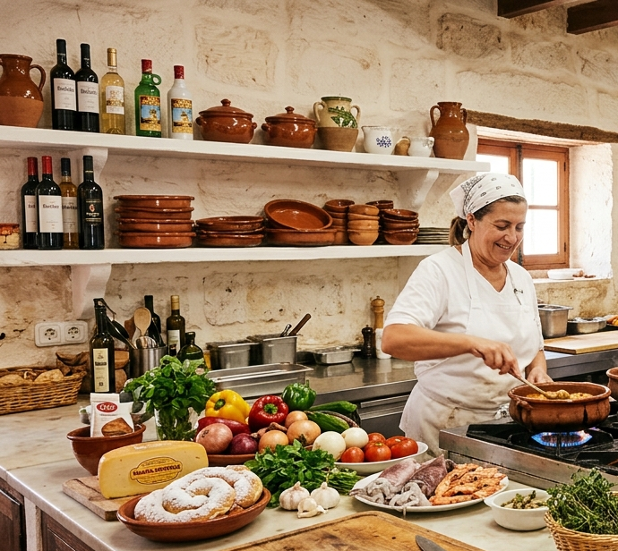
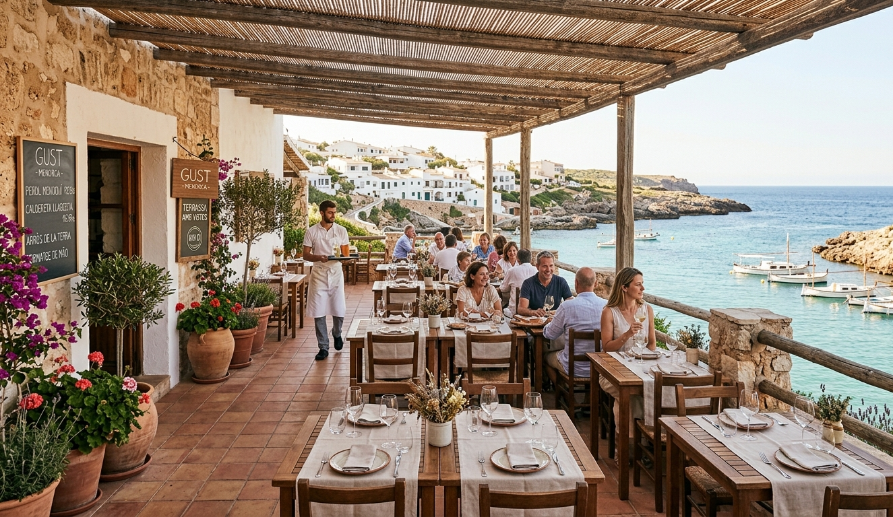

Com va neixer Gust?
Gust va néixer a Menorca de la unió entre tradició familiar i passió gastronòmica. Després de recórrer món, vam tornar a les arrels per retre homenatge a les receptes de la nostra illa des d'una mirada actual. Transformem un antic local mariner en un espai on el passat i el present es troben a cada plat.
Filosofia
La nostra filosofia es basa en el respecte al producte de proximitat (Km 0) i a la cuina feta a poc a poc. Treballem amb pagesos i pescadors de l'illa per oferir formatge de Maó i peix fresc diari. El nostre objectiu és crear una experiència gastronòmica autèntica, sostenible i inoblidable.
Cuina

Terrassa
